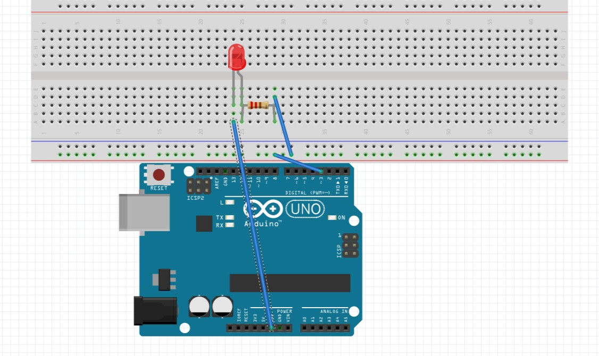
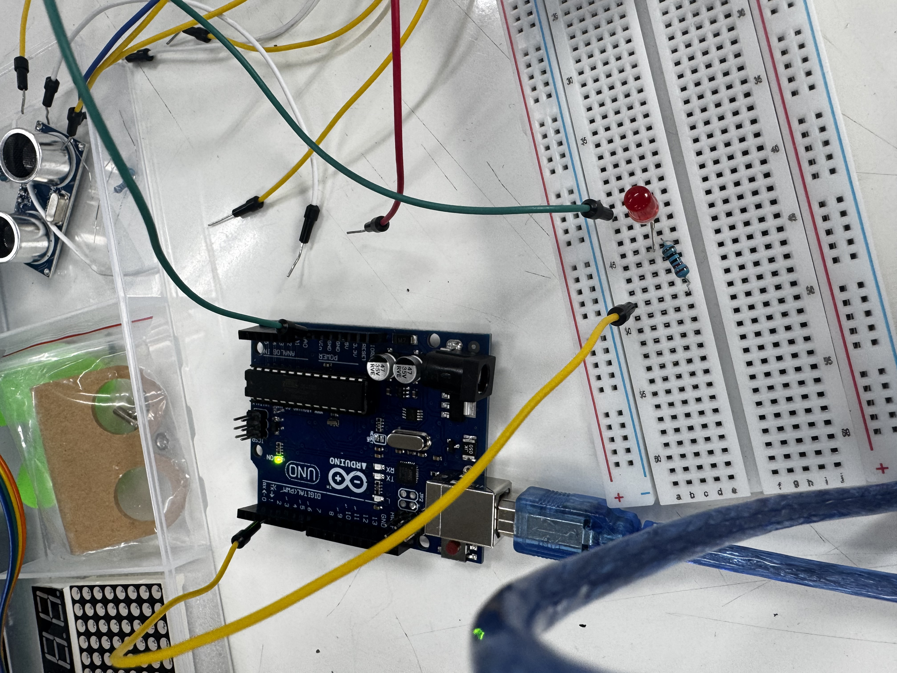

p5.js 슬라이더를 이용한
LED 밝기 조절
웹 화면의 슬라이더 값을 아두이노로 전송하고, PWM 출력을 이용해 LED의 밝기를 조절하는 프로젝트 제작 기록
프로젝트 소개
이번 과제에서는 p5.js로 0부터 255까지 조절할 수 있는 슬라이더를 만들고, 슬라이더의 값을 USB 시리얼 통신으로 Arduino UNO R3에 전달하도록 구성했다. 아두이노는 전달받은 값을 analogWrite()에 적용하여 3번 PWM 핀에 연결된 LED의 밝기를 조절한다.
01.실제 작동 영상
p5.js 슬라이더를 움직일 때 아두이노에 연결된 LED의 밝기가 달라지는 과정을 촬영한 영상이다.
demo.mp4로 이름을 바꿔 GitHub 저장소 최상위에 업로드하면 이 자리에 표시됩니다.
02.구상 스케치 및 회로 연결
LED 배선과 슬라이더 제어 방식을 정리한 스케치 및 실제 회로 사진
sketch.jpg 업로드 시 자동 표시
wiring.jpg 업로드 시 자동 표시
Arduino UNO와 LED 핀 연결
| 구성 요소 | 연결 위치 |
|---|---|
| LED (+), 긴 다리 | 저항(220~330Ω)을 거쳐 D3(~3) |
| LED (-), 짧은 다리 | GND |
| 아두이노 USB | PC USB 포트 |
일반 LED 기준 배선이다. 전류 제한용 저항을 직렬로 연결해야 한다.
03.p5.js 슬라이더로 LED 밝기 제어
아두이노 UNO를 USB로 연결한 후 브라우저에서 슬라이더를 조작할 수 있다.
연결 안 됨
실제 LED를 제어하려면 PC Chrome 또는 Edge에서 접속하고, USB로 연결된 UNO의 COM 포트를 선택해야 한다. 아두이노 IDE 시리얼 모니터는 닫아둔다. 아두이노 없이도 화면의 LED 미리보기는 작동한다.
04.아두이노 및 p5.js 코드
Arduino UNO는 받은 1바이트 값을 PWM 밝기 값으로 사용하고, p5.js는 슬라이더 값(0~255)을 시리얼 통신으로 전송한다.
Arduino IDE 코드
// Arduino UNO · LED PWM 제어
const int ledPin = 3;
void setup() {
pinMode(ledPin, OUTPUT);
Serial.begin(9600);
analogWrite(ledPin, 0);
}
void loop() {
if (Serial.available() > 0) {
int brightness = Serial.read();
analogWrite(ledPin, brightness);
}
}실제 작성 코드 캡처
code1.jpg, code2.jpg … 이름으로 업로드하면 이 아래에 표시됩니다.05.동작 원리
1) p5.js 슬라이더 입력
createSlider(0, 255, 0, 1)로 밝기 값을 입력한다. 슬라이더를 움직일 때마다 해당 값을 읽어 전송 대상으로 설정한다.
2) Web Serial을 이용한 데이터 전송
브라우저에서 시리얼 포트를 연결하고 9600 baud로 통신한다. 밝기 값은 0부터 255까지의 정수이므로 1바이트로 전송할 수 있다.
3) PWM을 이용한 LED 밝기 조절
아두이노는 Serial.read()로 값을 읽고 analogWrite(3, brightness)로 PWM 출력을 조절한다. 값이 커질수록 PWM의 HIGH 비율이 증가해 LED가 더 밝게 보인다.
06.결과 및 고찰
이번 프로젝트는 웹에서 조작한 값을 물리적인 LED 출력과 연결하는 것을 목표로 한다. 슬라이더의 범위를 PWM 제어에 사용하는 0~255로 맞춰, 입력값을 별도 변환하지 않고 아두이노에 전달하도록 구성했다.
- 0을 선택하면 LED가 꺼진다.
- 값을 증가시키면 LED가 점차 밝아진다.
- 255에서 최대 밝기로 출력된다.
이 과정에서 p5.js의 사용자 입력, Web Serial 통신, 아두이노의 PWM 출력을 하나의 시스템으로 연결하는 방법을 다룬다. 실제 구현 영상 및 촬영 사진은 위 영역에 추가할 수 있다.